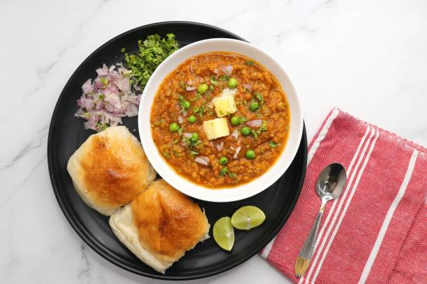

Back to States
Pav Bhaji

Ingredients
- 2 potatoes, boiled and mashed
- 1 cup cauliflower, finely chopped
- 1/2 cup green peas
- 1 capsicum, finely chopped
- 2 onions, finely chopped
- 2 tomatoes, finely chopped
- 1 tbsp ginger-garlic paste
- 2 tbsp pav bhaji masala
- 1 tsp red chili powder
- 1/2 tsp turmeric powder
- Salt to taste
- 2 tbsp butter
- Lemon wedges and chopped coriander for garnish
- Pav (bread rolls)
Instructions
1. Heat butter in a pan and sauté onions until golden.
2. Add ginger-garlic paste and cook until raw smell disappears.
3. Add tomatoes and cook till soft.
4. Add chopped vegetables, turmeric, chili powder, pav bhaji masala, and salt.
5. Mash the vegetables well while cooking and add a little water if needed.
6. Simmer for 10–15 minutes until it becomes a thick mixture.
7. Toast pav with butter on a tawa.
8. Serve bhaji hot with buttered pav, onions, lemon, and coriander.